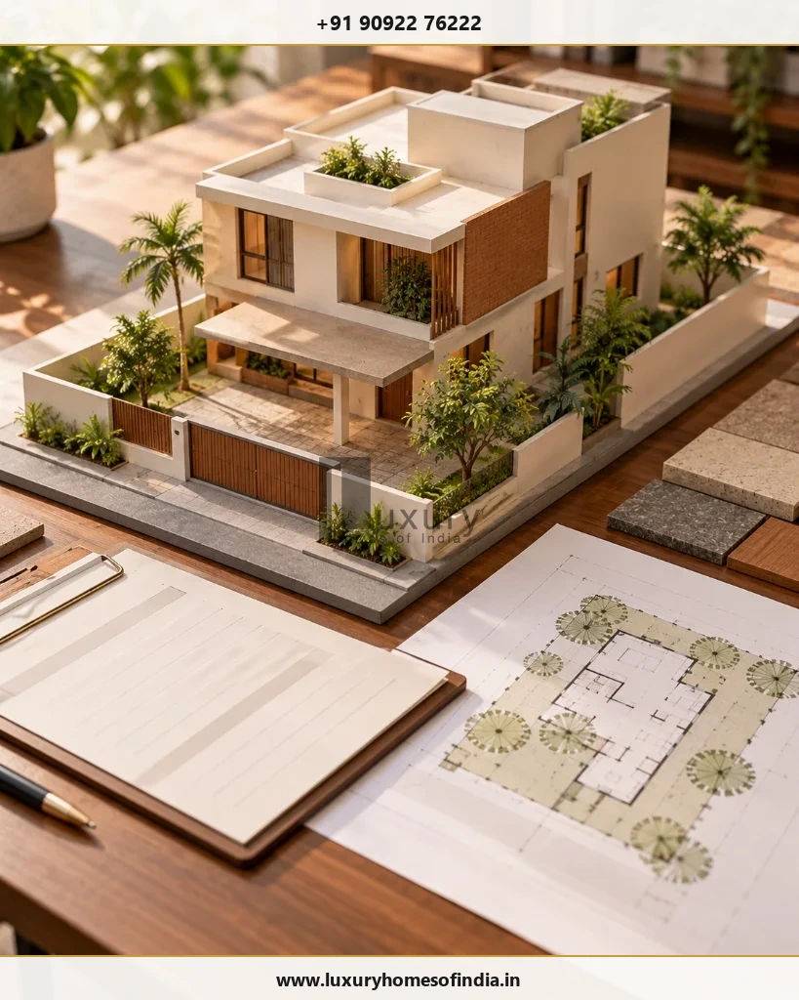

Building plan approval in Chennai does not follow one universal timeline. In May 2026, reports described a Greater Chennai Corporation (GCC) directive setting a 27-day time-bound process for covered planning permission and building permit applications. However, that timeline should not be treated as a guarantee for every property or proposal. The applicable authority, building category, completeness of the application and any additional statutory requirements all matter.
Tamil Nadu also has a self-certification route for specified residential buildings, subject to eligibility conditions. For homeowners planning a new house or luxury villa, the first step is to establish which approval route applies to the plot and proposed design. This guide explains the reported GCC timeline, the difference between GCC and CMDA processes, self-certification eligibility, documents to prepare and practical ways to reduce avoidable delays before construction begins.
Key Takeaways: Chennai Approval Timelines at a Glance
- Reported GCC 27-Day Process: A May 2026 directive establishes time-bound administrative deadlines across 5 stages for covered residential building applications within GCC limits.
- Administrative Deadline ≠ Guaranteed Approval: The 27-day timeline governs processing intervals for compliant files; incomplete records or non-compliant drawings reset scrutiny clocks.
- Jurisdiction Dictates Schedule: Greater Chennai Corporation (GCC) processes non-high-rise residential buildings within delegated limits, while larger or commercial proposals require CMDA planning permission.
- Instant Self-Certification Caveats: Qualifying residential villas under 2,500 sq ft plot and 3,500 sq ft built-up area can generate instant permits via self-certification, but strict statutory rules still apply.
- No Pre-Approval Construction: Site excavation or civil foundation work cannot begin on a pending application or payment receipt; a formal building permit must be validly issued.
1. How Long Does Building Plan Approval Take in Chennai?
The expected processing time depends on the application category and the competent authority having jurisdiction over your site. While recent reforms have significantly streamlined administrative scrutiny, residential projects in Chennai fall into distinct regulatory streams:
| Approval Route | What Homeowners Should Know |
|---|---|
| GCC applications covered by the reported 2026 directive | A 27-day time-bound process has been reported. Confirm its current scope, building category eligibility, and start date directly with GCC town planning authorities. |
| Eligible residential self-certification applications | A separate scheme applies to qualifying residential proposals under G.O. Ms. No. 118. Check all eligibility requirements and the current portal procedure before submitting. |
| Proposals requiring CMDA planning permission | The applicable process depends on the building category, planning requirements, special character zones, and delegated powers between CMDA and local bodies. |
| Applications needing corrections or additional clearances | The practical timeline can be affected by missing ownership records, revised architectural drawings, road-widening reservations, or other statutory clearances. |
2. What Does the Reported 27-Day GCC Approval Process Mean?
Reports published on 30 and 31 May 2026 described a Greater Chennai Corporation (GCC) directive introducing a time-bound process for planning permission and building permit applications handled under the relevant procedure.
The reports describe specific internal deadlines for site inspection, submission of inspection reports by executive engineers, structural and planning scrutiny, online clarification requests, and final processing. The exact procedure and its applicability should be checked against the underlying circular and current GCC instructions.
The reported time-bound approval process operates across five distinct stages:
Stage 1 Application Preparation and Submission
The applicant works with an appropriately registered professional (architect or licensed surveyor) to prepare property information, dimensioned drawings, and prescribed supporting documents. The application is submitted through the Tamil Nadu Single Window Portal.
Stage 2 Site Inspection
The relevant zonal officials inspect the property as required under the applicable procedure. Site boundaries, road access, measured road width, physical site conditions, and proximity to water bodies or high-tension lines must be physically verified against the submitted site plan.
Stage 3 Document and Drawing Scrutiny
The application is examined for completeness and compliance with the Tamil Nadu Combined Development and Building Rules, 2019 (TNCDBR-2019). Inconsistent dimensions, missing records, or non-compliant proposals (such as substandard setbacks or excess coverage) require clarification or revision.
Stage 4 Clarifications and Corrections
Where additional information is requested by the scrutiny officer, the applicant or registered professional must respond through the prescribed online portal. Check the applicable deadline rather than assuming that every application follows the same response window.
Stage 5 Fees and Final Permit
Once the proposal satisfies all applicable statutory requirements, a formal demand notice is issued. The applicant pays the prescribed building plan approval fees online. Verify the digitally signed permit order and approved drawings before treating the application as cleared for construction.

What this means for homeowners: Use the reported 27-day process as a reason to prepare carefully, not as a substitute for confirming the correct approval route or the actual status of your application. When an application is prepared with rigorous accuracy, the time-bound framework helps ensure predictable administrative processing.
3. Should You Apply Through GCC or CMDA?
The correct approval route depends on the property's location, the proposed building category, and the planning powers assigned to the relevant authority. Confusing the jurisdiction of the Greater Chennai Corporation (GCC) and the Chennai Metropolitan Development Authority (CMDA) is one of the most common causes of multi-month delays.
GCC publishes information about the building categories it handles under delegated planning powers and explains its building permit process. Non-high-rise residential buildings (up to 12 metres height or ground plus two floors/stilt plus three floors within specified area thresholds) are generally processed directly by GCC. Other proposals—such as larger multi-dwelling developments, institutional layouts, or properties along designated major corridors—may require planning permission through CMDA, while the subsequent building permit is issued by the local body.
Before submitting an application, establish the following five critical site parameters:
- Local Body Jurisdiction: Whether the property falls within Greater Chennai Corporation (GCC 15 zones) or an adjacent municipality/town panchayat under DTCP jurisdiction.
- Building Specifications: The proposed building's designated use, maximum height, number of floors, total floor area, and dwelling unit configuration.
- CMDA Planning Permission Need: Whether the proposal exceeds local body delegated limits and requires prior planning permission from CMDA.
- Permit Issuing Authority: Which competent authority will issue the final building permit and license after planning clearance.
- Statutory Conditions & Clearances: Whether site-specific constraints apply, such as Coastal Regulation Zone (CRZ) rules along ECR, ASI monument buffer zones, airport height restrictions, or waterbody setback reservations.
This check is particularly important when designing a bespoke luxury villa in Chennai, where architectural features like double-height courtyards, basement home theatres, or expansive cantilevered decks may affect building classifications and regulatory compliance.
4. How Long Does Self-Certification Building Approval Take?
Tamil Nadu's self-certification framework provides an expedited approval mechanism for specified small residential buildings. Introduced under Government Order (G.O. Ms. No. 118), this route is designed to eliminate discretionary waiting periods for qualifying standalone houses.
Published rules describe an eligibility framework that strictly includes:
- Plot Area: Up to 2,500 sq. ft. (approximately 232 sq. metres).
- Built-up Area: Up to 3,500 sq. ft. (approximately 325 sq. metres) across all habitable levels.
- Floor Configuration: Ground-floor or ground-plus-one-floor (G+1), or stilt plus two floors within prescribed limits.
- Dwelling Units & Height: No more than two dwelling units and a maximum building height of 7 metres (or up to 10 metres under amended notifications) under the applicable framework.

Other conditions also apply. Plot size and built-up area alone do not automatically establish eligibility. Properties situated on unapproved layouts without prior regularisation, plots fronting substandard road widths (below 7 metres or 23 feet), land falling within coastal buffer zones, or plots near water bodies fall strictly outside the self-certification scheme.
The process is intended to simplify approval for eligible proposals, but homeowners should confirm the current portal procedure, applicable charges, and eligibility requirements before relying on it. Most importantly, self-certification does not mean that building regulations can be ignored. The applicant and the registered professional remain legally accountable for ensuring full compliance with FSI limits, plot coverage, and mandatory setbacks under TNCDBR-2019.
5. What Can Delay Building Plan Approval?
Even with a time-bound administrative process like GCC's reported 27-day framework, application-specific issues can pause scrutiny or trigger formal query notices. Understanding the most common bottlenecks helps homeowners address potential defects before submission:
- Incomplete Property Records: Missing or inconsistent ownership documents, unverified parent deeds, missing legal heir certificates, or discrepancies between registered title and revenue records will prevent an application from progressing.
- Incorrect Site Dimensions: A discrepancy between physical site measurements, the revenue survey sketch (FMB/TSLR), and the submitted architectural drawings requires physical re-measurement and revised drawings.
- Non-Compliant Drawings: Architectural layouts that fail to respect mandatory setbacks (front, rear, and sides), exceed permissible building height, breach floor space index (FSI) ceilings, or fail to provide required on-site car parking will be flagged during scrutiny.
- An Incorrect Application Route: Submitting a commercial or mixed-use proposal under a residential category, or applying to GCC for a project that requires CMDA clearance, leads to administrative rejections and significant wasted time.
- Site-Specific Constraints: Insufficient road access width, alignment with planned master plan road widenings, proximity to watercourses, or presence of overhead high-tension power lines require specialized verification.
- Additional Clearances: Certain sites require external NOCs—such as from the Public Works Department (Water Resources Organisation) for watercourse proximity, the National Monuments Authority, or the Coastal Zone Management Authority.
- Slow Responses to Scrutiny Queries: When a scrutiny officer raises an online query or requests a drawing clarification, failing to submit updated CAD drawings and documents within prescribed deadlines prolongs the overall schedule.
The most effective preventive step is an independent pre-submission review conducted by an experienced architect or registered engineer who can audit site documentation, survey particulars, and drawings against current planning rules.
6. What Documents Should You Prepare?
Organising your property documents and architectural drawings before initiating an online application is the single most reliable way to avoid scrutiny hold-ups. Use this comprehensive checklist to prepare your dossier:
| Document or Information | Regulatory Purpose |
|---|---|
| Ownership and Property Records | Registered sale deed, settlement deed, or gift deed establishing the applicant's lawful title and interest in the property. |
| Applicable Patta, TSLR, or Revenue Records | Revenue patta issued in the applicant's name or Town Survey Land Record (TSLR) extract establishing recorded land particulars. |
| Survey Records & Site Measurements | Field Measurement Book (FMB) sketch or Town Survey sketch showing precise plot boundaries, adjoining survey numbers, and road frontages. |
| Site Plan and Architectural Drawings | Detailed AutoCAD drawings prepared to scale showing key plan, site plan, floor plans, sections, elevations, parking, and rainwater harvesting details. |
| Registered Professional's Credentials | Registration details, council license number, and digital endorsement of the Architect (COA registered) or Licensed Surveyor. |
| Road Access and Site Information | Documentation verifying public road access, maintenance by GCC or local body, and measured road width in front of the site. |
| Previous Approvals (if applicable) | Approved plan copy, building permit order, or regularisation order in case of demolition-reconstruction or alteration projects. |
| Required Declarations & NOCs | Structural stability undertaking, owner affidavits, and site-specific no-objection certificates if applicable. |
Note: Required documents vary depending on building category, location, and approval authority. Always verify the latest requirements on the live Tamil Nadu Single Window Portal before submission.
7. How Can You Reduce Avoidable Approval Delays?
A well-prepared application starts long before final architectural drawings are uploaded to the portal. Homeowners who navigate approvals smoothly generally follow eight disciplined practices:
- Verify Property Records Early: Confirm that the patta is in the current owner's name, survey numbers match the sale deed, and there are no boundary discrepancies between the physical site and revenue sketches.
- Confirm the Appropriate Approval Route: Establish whether your home qualifies for self-certification or requires standard GCC scrutiny or CMDA planning clearance.
- Check Planning Feasibility First: Evaluate road width, zoning classification, and mandatory setback requirements before freezing the architectural floor plans.
- Engage Authorised Registered Professionals: Ensure your architect or structural engineer is formally registered with GCC or the Single Window Portal with active portal login credentials.
- Coordinate All Drawings Rigorously: Reconcile architectural layouts, structural grids, and site plans so that dimensions and boundary lines match perfectly.
- Complete Every Prescribed Form: Review the official checklist to confirm all required affidavits, undertakings, and site photos are attached.
- Monitor Application Status Daily: Use your Single Window Portal application reference number to track progress, inspect inspection officer updates, and check for scrutiny queries.
- Respond to Clarifications Promptly: When a query is raised, work with your architect to upload accurate, complete revisions within the specified time window.
These proactive steps cannot eliminate statutory processing times, but they prevent avoidable re-inspections and administrative rejections that frequently add months to a project.
8. When Can Construction Begin?
A widespread misconception among homeowners is that construction may commence as soon as an application is submitted, a site inspection has taken place, or scrutiny fees have been remitted. This is legally incorrect and exposes the project to stop-work notices and enforcement action.
Before breaking ground, verify that the required planning permission and building permit have been validly issued, or that all statutory legal conditions of a formally authorised self-certification process have been satisfied. Once approval is granted, follow this post-approval checklist:
- Inspect the Sanctioned Plan: Verify that the approved drawings bear official municipal digital signatures and registration numbers.
- Review Permit Conditions: Scrutinise all conditional clauses attached to the permit order, including rainwater harvesting norms, debris management, and tree planting requirements.
- Distribute Approved Drawings: Provide the sanctioned architectural drawing set to your structural engineer, project manager, and principal building contractor.
- Ensure Strict On-Site Adherence: Ensure all layout pegging, column marking, and setback distances on site precisely follow the approved drawings.
- Manage Design Changes Legally: If design revisions become necessary during construction, confirm with your architect whether a revised plan approval is required before making alterations on site.
For custom residential construction, maintaining strict alignment between sanctioned drawings and as-built execution is essential for obtaining utility connections and a subsequent Completion Certificate (CC) without penalties.
9. How Approval Affects a Luxury-Home Construction Schedule
Building approval is just one critical component of an integrated pre-construction programme. For a custom villa or high-end residence, the pre-construction phase typically spans several coordinated workstreams:
- Title & Site Due Diligence: 2 to 4 weeks (revenue boundary verification, soil investigation, legal due diligence).
- Architectural Concept & Schematics: 4 to 8 weeks (bespoke spatial layouts, elevation design, client design reviews).
- Statutory Submission & Scrutiny: 4 to 8 weeks (Single Window Portal submission, site inspection, fee payment, permit issuance).
- Engineering Coordination & Working Drawings: Conducted partly in parallel with statutory scrutiny (structural analysis, MEP engineering, HVAC and home automation coordination).
- Contractor Selection & Procurement: 3 to 5 weeks (BOQ finalisation, vendor tendering, long-lead material planning).
For a luxury residence, attempting to rush an application by submitting incomplete drawings is counterproductive. If substantial design modifications are made after permit issuance, revising the approval can take longer than getting it right the first time. The objective is to align the proposed architectural vision with the regulatory realities of the site from day one.
Frequently Asked Questions
Conclusion
Building plan approval in Chennai depends on the proposed building, the competent authority and the requirements that apply to the site. The 27-day GCC process reported in May 2026 is an important development for covered applications, but homeowners should verify its current scope rather than assume that every proposal will be approved within that period.
For anyone planning a new house or luxury villa, the practical starting point is to confirm the approval route, verify property records and assess planning feasibility before finalising the design. Accurate documentation and early coordination can help reduce avoidable corrections and make the transition from design to construction more organised.
Planning a Custom Villa or Luxury Home in Chennai?
Before finalising your architectural drawings, clarify your plot constraints, proposed building configuration, setback requirements, and statutory approval routes. Our technical planning and design team helps homeowners achieve seamless approvals and flawless bespoke execution.
Schedule a Planning Consultation → Explore Construction CostsSources and Further Reading
- Greater Chennai Corporation — Town Planning and Building Permit
- Greater Chennai Corporation — Building Plan Approval Process (PDF)
- Tamil Nadu Single Window Portal for Planning Permission (onlineppa.tn.gov.in)
- DT Next — GCC 27-day approval directive, 30 May 2026
- The New Indian Express — GCC 27-day approval directive, 31 May 2026
Written by: Luxury Homes of India Editorial
Reviewed by: Technical Compliance & Planning Review Team | Luxury Homes of India